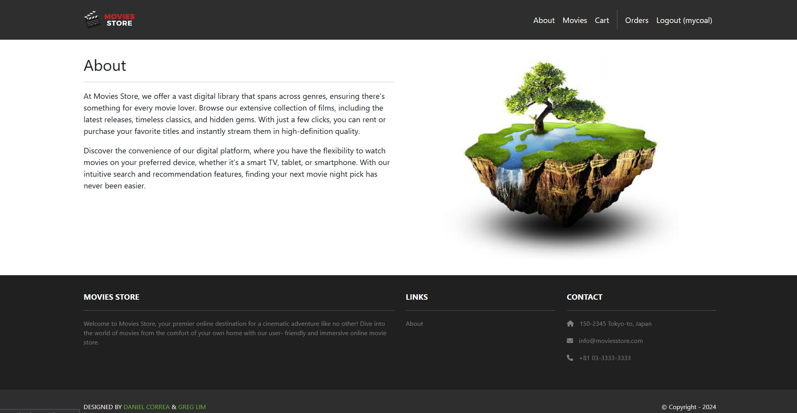
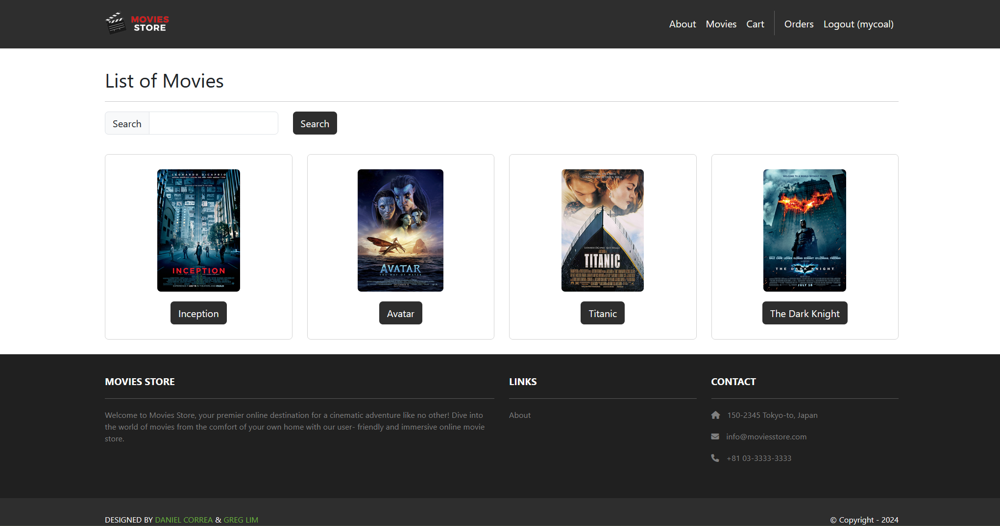

Project #1 for CS 2340
Access App (might be shutdown) Source CodeResources
Discord Django BookGT Movies Store Description
The GT Movies Store is a Django web app where users can search, view, review, and purchase movies online.
Visitors can learn about the purpose of the store via the [ABOUT], register for an account, and log in for the main features. Users can browse
the movie catalogs, search for movies by ttile, and open movie pages to view more detailed information about that movie.
Registered users have access to their shopping cart where they can add 1+ copies of movies, view the items in the cart, remove them (and the
options to remove all) before checking out. When checking out, it completes the purhcase and is stored as orders so users can view their order history
later and keep track of what they pruchased.
The store also has a review system, where users can read reviews left on movies, create their own reviews, edit them, or delete them. Reviews that have
inappropriate content can also be reported by other users and removed frmo the page.
Admins have management tools for maintaining the store. They can manage users, moives, reviews, orders, and items by viewing, creating, updating, or deleting stored information.
Via pythoneverywhere, the app is accessible through a web browswer and uses a responsive interfance so the pages/features can adapt to different screen sizes.
Logged in users can view and purchase movies, leave comments (editable, deletable, reportable), and confirm purchase orders of moives.
Process Description
I developed this app incrementally around the user stories. Instead of building the entire application at once, I worked through each user story/feature
individually, such as auth, movie browsing, searching, shopping, reviews, orders, etc.
For each user story, I first figured out what the user needed to accomplish and what data the app needed to store. I implemented the necessary Django models,
views, URLs, and HTML. After adding in each feature, I tested it via localhost and then moved on.
Each time I encountered a problem, I used django's error messages to trace the issue back to the relavant code. I also referenced the textbook when I needed clarification.
Working on this project helped me understand Django and how the application works. Features such as purchasing a movie or adding a review requires the database,
server-side logic, URL routing, auth, and frontend templates to work together.
Video Demonstration
Visuals

